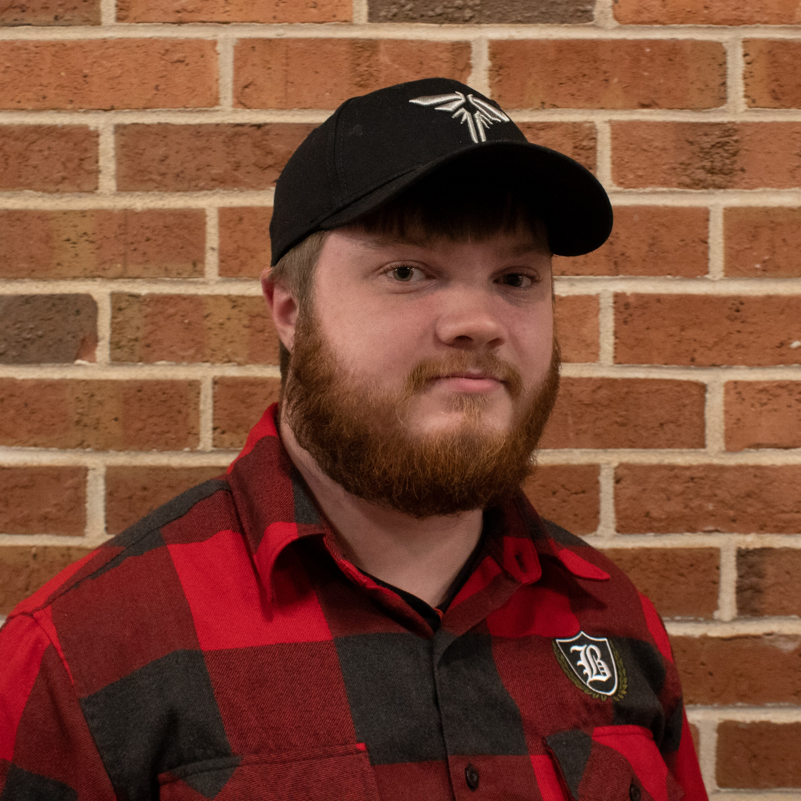

Third Eye is comprised of ten incredibly talented members who are passionate about game design, as well as three others who have volunteered their time to work with us.

|
Megan Southwick is the Art Lead and character artist for Third Eye and is from Mukwonago, Wisconsin. Outside of Third Eye, Megan is a student representative for the UW-Stout Game Design & Development program and an Ambassador for the university. Her favorite games are Alice: Madness Returns, Life is Strange, and Kingdom Hearts, and she is currently playing Rocket League and SMITE. LinkedIn: www.linkedin.com/in/megsouth Artstation: www.artstation.com/megsouth Art Instagram: www.instagram.com/megsouth_3d |

|
Alicia Lloyd is a student at the University of Wisconsin Stout in the Entertainment Design major with a concentration in Animation and a focus in 3D Modeling and 3D Game Art. Alicia is currently in her senior year at Stout working on the Game Design Capstone project with a team of talented individuals. Portfolio: loidekol.wixsite.com/alicialloyd |
|

|
TJ Pfaff is a programmer inside of Third Eye. He is from Prairie du Sac, Wisconsin. His favorite game and the one that he is currently playing is Call of Duty: Modern Warfare. Portfolio: tjpfaff.jimdofree.com LinkedIn: www.linkedin.com/in/tj-pfaff-a09b3a180 |

|
Alex Greenberg is from Madison, WI, and is the environment artist/level designer on the team. His favorite game is between Bloodborne and Battlefield 1, and he is currently playing CoD: Modern Warfare 2019. Portfolio: alexmon4edac.myportfolio.com |
|

|
Hannah Schenk is a technical artist and 3D generalist for Third Eye (she also designed this website). She is from West Bend, WI, and enjoys taking care of her leopard gecko, Spots Kobayashi, and her cat, Millie, in her free time. Her favorite game is a tie between Animal Crossing and Fallout New Vegas, and she is currently playing Outer Worlds. LinkedIn: www.linkedin.com/in/hannah-schenk Portfolio: www.hannahschenk.com Artstation: www.artstation.com/schenkh0504 |
Joseph Matzelle is the producer for Third Eye and a programmer. He hails from lovely Lake Mills, WI and his favorite game is Pikmin. Portfolio: jemdev.fun LinkedIn: www.linkedin.com/in/joseph-matzelle-4b4491162 |
||
|
Nathaneal Apolloni, or Nate for short, is one of the artists on the Third Eye team with a focus on the 3D side of things. He is originally from Isanti, MN and is currently living in Shoreview, MN. His interest include Anime, Manga, Writing, Reading, Video Games, and doing general art stuff. A few of his favorite games would be the Neptunia franchise, The Monster Hunter series and a long list of strategy games such as Civilization and the Total War series. He has been grinding away at Monster Hunter World and also slowly going through a list of JRPG's he picked up. While he does not have a website or LinkedIn, he plans on having one up by next semester, so look forward to whatever gets put on there. |

|
Michael Lange is a programmer on the team, and he is from Fond du Lac, WI. His favorite game is Terraria, and he is currently playing Warhammer II. LinkedIn: www.linkedin.com/in/michael-j-lange |
||
|  |
James Cerasani is originally from Madison, WI and serves as one of the programmers for Third Eye. His favorite game is God of War. LinkedIn: www.linkedin.com/in/james-cerasani-1ba518182 |
Jake Anderson has been a student at UW-Stout for the past 3 years. He is programmer lead for the studio. His hometown is Clayton, Wisconsin. His favorite video game is Monster Hunter World and he's currently playing many titles at the moment including: Monster Hunter World: Iceborne, Destiny 2 Shadowkeep, and Total War Warhammer 2. LinkedIn: www.linkedin.com/in/jake-a-077357b4 |
||
|
Emily Wegner is an Entertainment Design Animation major at University of Wisconsin-Stout, originally from Irma, Wisconsin. She is the cinematic artist for Third Eye. Her all-time favorite game is Witcher 3, and she's currently been playing Monster Hunter World in her free time. Portfolio: www.artstation.com/emryn |
Isaac Parks is a sound desiner/composer working on audio for Third Eye. He's located in Boston, MA. He is currently playing RCT2, and his favorite game is Portal 2. Portfolio: www.isaacparksmusic.com |
|||
|
Chris Allison is a student at the Berklee College of Music in Boston, and is from Cleveland, Ohio. He is one of the composers for Third Eye. He is currently playing Sneaky Sasquatch, but his favorite game of all time is Skyrim. He has dreams to work at a big game company someday, and he owns a cute cat named Shosty. |